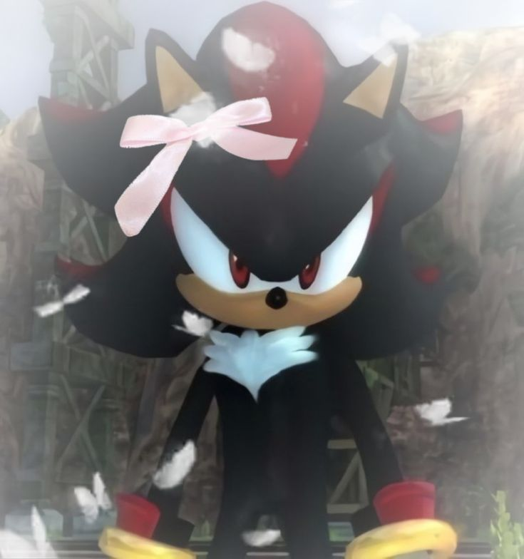

More About My Interests

Sonic and Pokémon are basically the blueprint for memes, cuteness. Sonic gave us a blue hedgehog who runs faster than "the speed of sound", while Pokémon handed us an entire world of little creatures grown men spend their livelihoods gambling for. These franchises aren’t just games, they’re cultural icons that shaped how people connect, create, and interact online and in physical spaces. From Pikachu’s eternal dominance in the world of plushies to Sonic’s unreasonably committed online fanbase, both series have built communities full of humor, nostalgia, and love.
Below I will leave some important moments and memes for the fandom.
Important Notes:
- SnapCube Sonic Fan Dub
- Pokemon Legends ZA just came out!!
- Pokemon Center Mew is Lebron James
- Big Puffer Nuzlocke on Pokemon Red
- Sonic diverse representation??